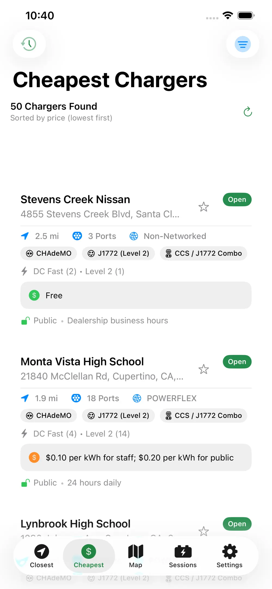
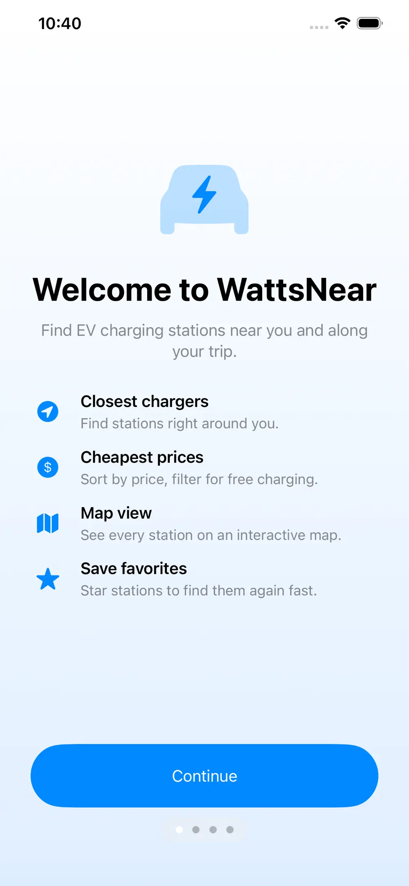
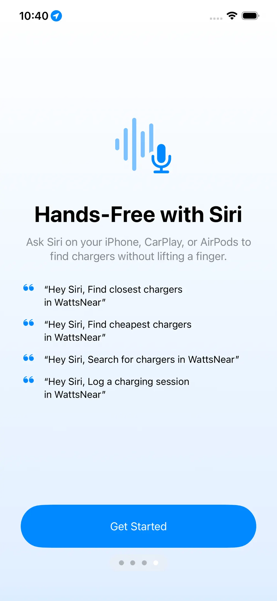
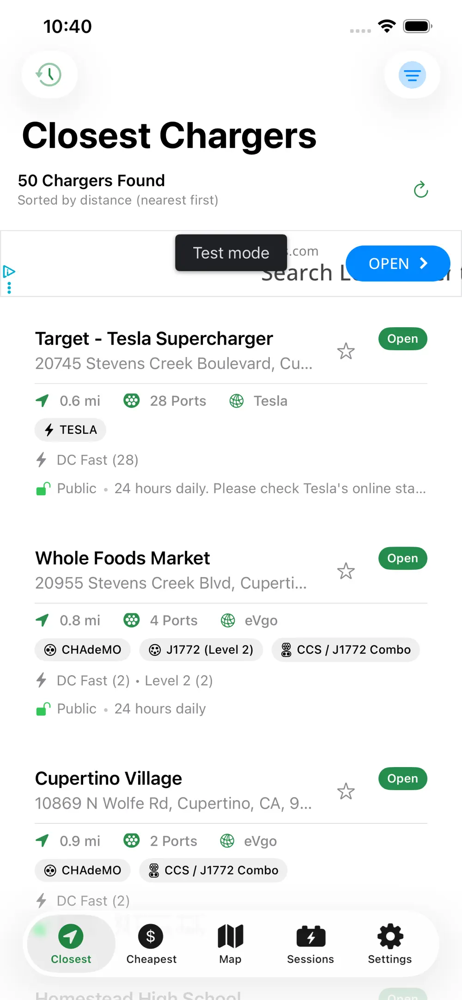
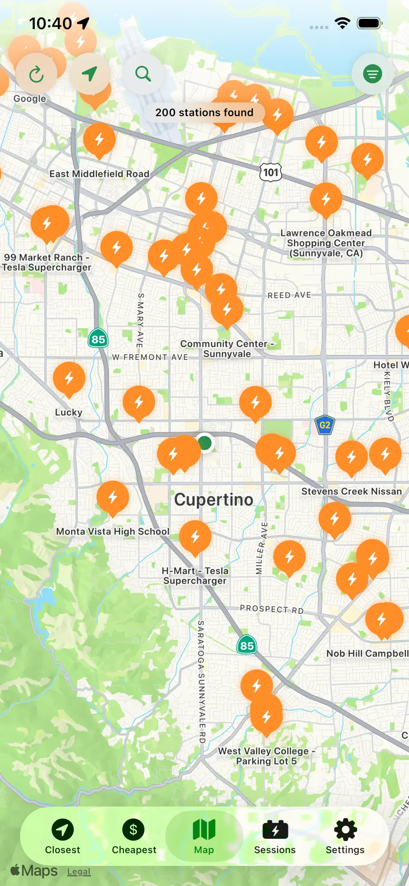
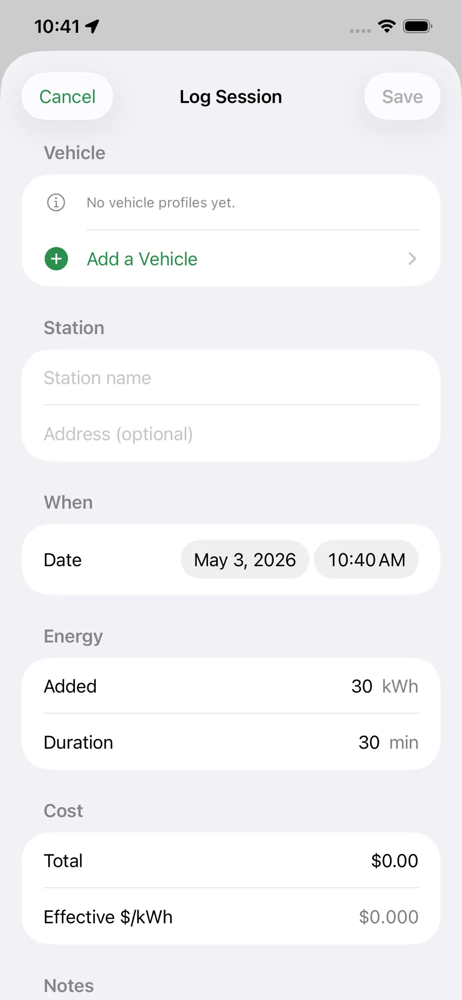

For iPhone & CarPlay · Free
Find the closest, cheapest EV charger — fast.
WattsNear shows you nearby charging stations from the U.S. Department of Energy's NREL database, sorted by distance or price per kWh. Plan trips around your battery range, log charging sessions, and use it hands-free with Siri or CarPlay.

What's inside
Everything an EV driver actually needs.
Built on live NREL data — the same charging-station database the U.S. Department of Energy maintains. No accounts, no servers, no tracking.
⚡
Closest & cheapest tabs
Two quick-access lists answer the only two questions that matter when you need a charge.
💸
Price-aware sorting
Estimated cost per kWh is parsed from the NREL pricing field so you can compare before you plug in.
🧭
Trip range planner
Enter your battery, efficiency, and target charge level to see which chargers are reachable on your current state of charge.
⭐
Favorites & avoid list
Star the chargers you trust and hide the ones you don't. Both lists sync across your Apple devices.
🗺️
Map with "search this area"
Pan anywhere — destination, vacation, a friend's house — and refresh results from the new center point.
🔌
Connector & network filters
NACS, CCS, CHAdeMO, J1772, Tesla — and any network from Tesla and Electrify America down to municipal one-offs.
📒
Session log
Record what you paid, how many kWh you took on, and where — so you can see your real-world charging cost over time.
☁️
Optional iCloud sync
Favorites, history, vehicle profiles, and sessions sync through your private iCloud database. Opt-in, no third-party servers.
See it in action
What WattsNear looks like on your phone.
Straight from the App Store — no mockups, no marketing renders.





CarPlay, Siri & Widget
Built for the driver's seat, not just the home screen.
WattsNear shows up where you actually use it — on your dashboard, from Siri, and as a tap-and-go widget.
Four tabs at a glance
Nearest, Cheapest, Favorites, and Search — all sortable on your car's display. Filters carry over from your phone.
Hands-free shortcuts
"Hey Siri, find a charger" pulls up nearest stations through App Intents. Add custom shortcuts in the Shortcuts app.
Closest charger on the home screen
The home-screen widget keeps the nearest charger one tap away. Tap to launch straight into directions.
EV vs. gas
See what your electric miles really cost.
Tweak the sliders to compare a full year of electric driving against the equivalent gallons of gas. The in-app trip-range planner uses the same kind of math, scaled to your actual vehicle.
Estimated annual charging cost
$0
Estimated gas equivalent
$0
Potential annual savings
$0
FAQ
Common questions.
How much does WattsNear cost?
Free on the App Store. The free version shows a banner ad; a one-time "Remove Ads" in-app purchase strips them out forever. No subscriptions.
What devices does WattsNear support?
iPhone running iOS 18 or later, plus CarPlay. A home-screen widget and App Intents (Siri / Shortcuts / Spotlight) are included.
Where does the station data come from?
The U.S. Department of Energy's NREL Alternative Fueling Station Locator — the same public dataset many EV apps rely on. Station info is provided by the networks themselves and may occasionally be out of date.
Do you collect my location or browsing data?
No. WattsNear has no backend. Your device sends its coordinates directly to the NREL API to find nearby stations; we never see or store them. Favorites, history, and sessions live only on your device, with optional sync through your private iCloud database.
How is the price per kWh estimated?
NREL exposes a free-text pricing field that each network fills in differently. WattsNear parses common formats (per kWh, per minute, free, member-only rates) into a single rough estimate so the "cheapest" sort is meaningful. Always verify at the station.
Can I filter to only free chargers?
Yes — one toggle in the filter sheet. There are also filters for connector type (NACS, CCS, CHAdeMO, J1772, Tesla), network, search radius, and station status.
Get the app
Free on the App Store.
WattsNear is live for iPhone and CarPlay. No account required — install and start finding chargers.